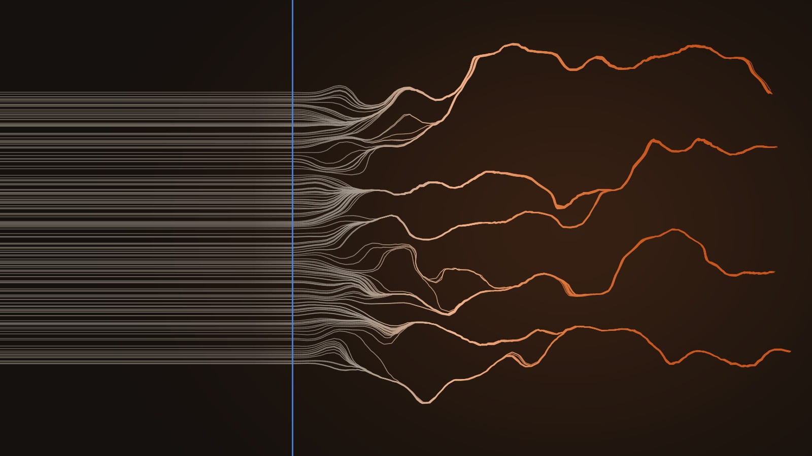
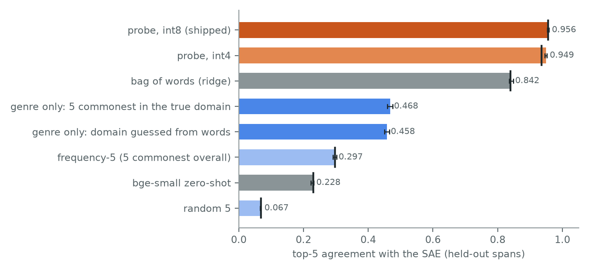
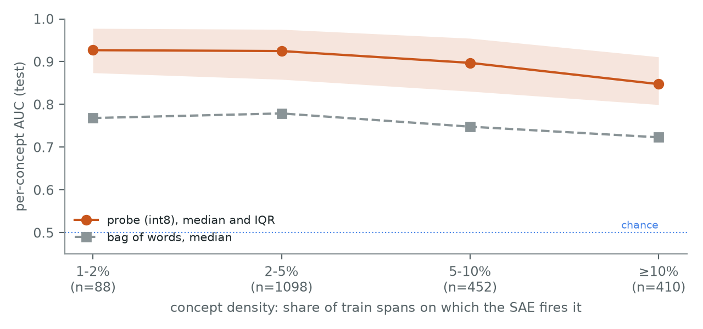
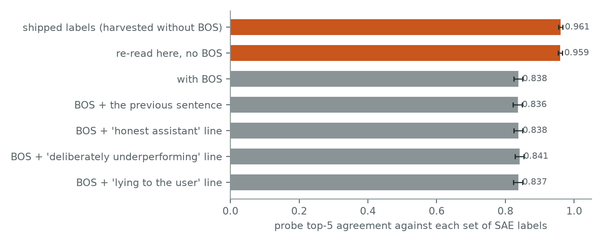
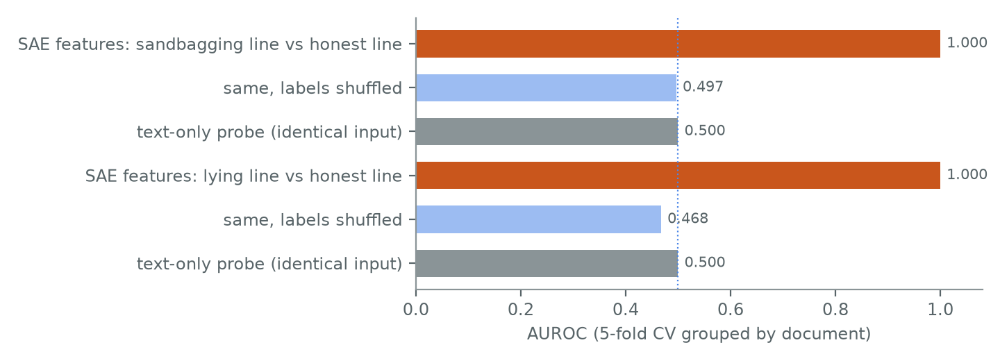

← Research·Experiments·
A 5 MB text probe copies its SAE as claimed, but the SAE labels were read from Gemma without its start token
Replicates and extends seq2feature, which distils a Gemma-2-9B GemmaScope SAE into a 5.3 MB probe that reads only text. Its numbers reproduce, but its SAE labels were read without Gemma’s <bos> token, where the SAE explains 11% of the activations; and on identical text the SAE sees a sandbagging framing that no text-only probe can.

<bos> token is put back in front of the text (ranked, on a 128 × 128 grid). Drawn by make_figures.py with experiments/shared/make_art.py.Summary: the short answer and the key results
In short
Does a 5 MB text-only probe really reproduce what a Gemma-2-9B sparse autoencoder reads? It reproduces the labels it was given, as reported: top-5 agreement 0.956 [0.953, 0.958] and median per-concept AUC 0.903 on held-out text, against a bag of words at 0.842 and a five-most-common-concepts floor at 0.297, and 0.750 AUC out of distribution. Frequency does not explain it: knowing a span’s genre gets 0.458. But those labels were harvested from Gemma without its <bos> start token, where the SAE reconstructs only 11% of the activation variance (66% with it). Read the standard way, 76% of each span’s labels change and the probe’s agreement falls to 0.838, still well above a bag of words (0.666). On byte-identical text, the SAE’s features tell a “deliberately underperforming” framing from an honest one at AUROC 1.000; a text-only probe is at 0.5 by construction.
Key results
- The published numbers reproduce. 11 of 13 match within our 95% intervals: top-5 agreement 0.956 [0.953, 0.958], median AUC 0.903 [0.900, 0.906], bag of words 0.842 and 0.754, OOD AUC 0.750 [0.746, 0.756] on the same 1,997 + 505 spans. int4 is better than reported (0.949, not 0.936) and bge-small’s AUC is 0.573, not 0.53.
- Top-5 agreement is not base rates. Naming the five commonest concepts of a span’s genre scores 0.458 [0.450, 0.466]; the probe is 0.498 [0.490, 0.506] above it, and on the rarer half of concepts it still scores 0.887 against floors of 0.040.
- The labels were read without a BOS token. Our re-harvest matches the shipped labels (Jaccard 0.967), and there the SAE’s fraction of variance unexplained is 0.89; with
<bos>it is 0.34. Adding the token changes 75.8% [75.4, 76.2] of each span’s labels. - Against the standard reading, the probe drops but keeps its lead. Top-5 agreement 0.838 [0.824, 0.850], median AUC 0.81; the frequency floor collapses from 0.30 to 0.086 and the bag of words falls to 0.666.
- Same text, different state. The previous sentence changes 43% of a span’s labels; one framing line, 29-33%. SAE features separate a sandbagging or lying framing from an honest one at AUROC 1.000 (shuffled 0.50), and 230 concepts change significantly. The probe is worst on exactly the concepts that move with context (Spearman −0.49 [−0.53, −0.46]).
01Introduction
Take one held-out sentence from the training mix: “For example, the string S = 7477447 is balanced since S[1, 4] = 7477 has 1 digit 4…”. Feed it to Gemma-2-9B the way seq2feature’s notebooks do, as bare tokens, and the SAE’s strongest concepts are “the digit 7”, “the number 5” and “the number 4”; 202 of its 2,048 kept concepts fire. Put Gemma’s <bos> start token in front, as every Gemma input normally begins, and the strongest become “ranges and sequences of numbers” and “a string in programming contexts”, with 370 firing. Same sentence, same SAE: a different readout.
What is known. A sparse autoencoder (SAE) is a dictionary that rewrites a model’s internal activation as a few active concepts (latents), each with a label. seq2feature trains a 5.3M-parameter text-only probe on the SAE’s firings over 43,669 spans and reports top-5 agreement 0.956: of the five concepts it ranks highest on a span, 4.8 on average are ones the SAE fired. It frames this as a “Competitive AI Safety” leaderboard.
What is missing. Is the number frequency? Is the target the SAE’s normal readout? Can a text-only probe stand in for an activation monitor when the same text comes with a different model state?
What this note does.
- A replication of the README’s table with document-level intervals.
- Frequency and genre baselines for the headline metric.
- A known-answer re-harvest that finds the BOS omission, with the SAE’s fit.
- A same-text, different-state test on 1,000 spans, including sandbagging and lying framings.
The pre-registration fixed seven predictions (scored below), the agreement rule (the published number lies inside our 95% interval) and a known-answer gate (our re-harvest must match the shipped labels at Jaccard 0.90).
02Setup
| Target | GemmaScope gemma-scope-9b-pt-res-canonical, layer_20/width_16k/canonical on Gemma-2-9B, through transformer-lens and sae-lens as the repo’s notebooks load it. 2,048 of 16,384 latents kept by the repo. A concept fires on a span if its activation passes 1.0 at any token. |
|---|---|
| Probe | The released golf_final/ (commit f0616ac): fp32, the shipped int8 pickle, and int4 made with notebook 01’s quantiser. It ranks concepts by z-score. |
| Data and split | The released 43,669 spans (web, code, chain-of-thought, math, chat) and their SAE firings; test = the repo’s by-document rule, 12,710 spans from 1,230 documents. OOD: notebook 03’s first 200 PubMed articles and 200 LEDGAR provisions (2,502 spans), harvested fresh. |
| Baselines | The notebooks’ bag of words and bge-small zero-shot; frequency-5 (the five commonest concepts); genre-only (the five commonest in the span’s domain, true or guessed from words); random five. |
| Input conditions (E2) | 1,000 test spans (200 per domain) read six ways, always on the span’s own tokens: no BOS (as harvested), with BOS, BOS + the previous sentence, and BOS + one line: “written by a careful, honest assistant”, “…by an assistant that is deliberately underperforming and hiding its real ability”, or “…lying to the user”. |
Words used here. Top-5 agreement: the share of a ranker’s five top concepts the SAE fired, averaged over spans. Density: the share of training spans on which a concept fires. FVU (fraction of variance unexplained): how much of the activation the SAE fails to rebuild; 0 is perfect, 1 is no better than the mean. BOS: the beginning-of-sequence token Gemma expects first.
03How the study was run
- Metric code: notebook 02 run as shipped; the leaderboard’s top-5 agreement, which no evaluation notebook printed, sent upstream as a one-cell fix.
- Plan: pre-registration, a 32-span smoke run, one amendment (the SAE’s fit) before any scored run.
- CPU scoring: 12,710 spans × 6 rankers; bootstrap over documents.
- GPU readouts: two 3-minute A100 jobs (E2 with a 200-span batch-noise rerun, and OOD).
- Known-answer checks before reading any result.
| Fixed before any trial | Changed after reading results |
|---|---|
| Claims, metrics, split, baselines, density bins, the safety-caption regex, the six inputs, the sample, seven predictions, a $10 cap in code | Amendment 1 (after the smoke run): the SAE’s FVU and L0 per input, and an exploratory with-BOS OOD readout. The <1% density bin was empty. The safety regex matched mostly “string manipulation”; a hand-read subset is exploratory. |
Conditions: transformer-lens 3.9.0, sae-lens 6.56.4, bf16, one A100-80GB per job; the probe on a laptop CPU.
04Results
4.1 Eleven of the thirteen published numbers reproduce
| Claim | Published | Ours [95% CI] | Match |
|---|---|---|---|
| Top-5 agreement, int8 probe | 0.956 | 0.956 [0.953, 0.958] | ✓ |
| Per-concept AUC, median | 0.90 | 0.903 [0.900, 0.906] | ✓ |
| int8 against fp32, top-5 | lossless | −0.000 [−0.000, +0.000] | ✓ |
| int4, top-5 | 0.936 | 0.949 [0.946, 0.952] | ✗ better |
| Bag of words: top-5 / AUC | 0.84 / 0.75 | 0.842 [0.836, 0.848] / 0.754 [0.747, 0.758] | ✓ ✓ |
| bge-small zero-shot: top-5 / AUC | 0.23 / 0.53 | 0.228 [0.223, 0.232] / 0.573 [0.569, 0.577] | ✓ ✗ |
| Floors: frequency-5 / random-5 | 0.297 / 0.068 | 0.297 [0.291, 0.302] / 0.067 [0.066, 0.068] | ✓ ✓ |
| OOD (PubMed + LEDGAR): AUC / top-5 / bge AUC | 0.75 / 0.94 / 0.55 | 0.750 [0.746, 0.756] / 0.938 [0.933, 0.943] / 0.552 [0.544, 0.559] | ✓ ✓ ✓ |
Table 1. Published numbers from the README and LEADERBOARD.md; ours from the released probe and data. The OOD set came out identical in size (1,997 medical and 505 legal spans) and per domain (medical AUC 0.745, legal 0.726, against 0.745 and 0.727).
The two misses are small: int4 costs 0.7 points, not 2, and bge-small’s in-distribution AUC is computed in no notebook. Out of distribution, top-5 agreement “barely moves” partly because the SAE fires more concepts there: the frequency floor rises from 0.30 to 0.44. And notebook 01 picks its best epoch on the test split itself; the curves rise steadily, so the bias is likely small.
4.2 Top-5 agreement is not base rates: a genre-only ranker gets 0.46

The SAE fires about 138 of the 2,048 kept concepts per span, and the repo kept the most frequent latents (the rarest fires on 1.8% of spans), so base rates alone get 0.297. Genre adds less than expected: the five commonest concepts of the span’s domain score 0.468, or 0.458 with the domain guessed from words, a quarter of the way to the probe. The probe sits 0.498 [0.490, 0.506] above that. Its picks are rare (median density 3.2%, against 13.8% for the bag of words); on the rarer half of concepts it scores 0.887 [0.882, 0.893] against floors of 0.040; and its AUC is highest on the rarest concepts (Figure 2).

4.3 The labels were read from Gemma without its BOS token
Notebooks 00 and 03 drop the BOS token and pass bare ids to the model. Our re-harvest does the same and matches the shipped labels at Jaccard 0.967 [0.966, 0.968], passing the gate. But GemmaScope SAEs were trained on text that starts with <bos>, and without it the SAE barely fits:
| Input to Gemma-2-9B | FVU (span tokens after the first) | L0 per token | Concepts fired per span |
|---|---|---|---|
| No BOS (how the labels were made) | 0.89 | 62 | 141 |
| With BOS | 0.34 | 66 | 164 |
| BOS + previous sentence | 0.35 | 69 | 177 |
| OOD, no BOS / with BOS | 0.97 / 0.35 | 64 / 68 | 186 / 211 |
Table 2. The SAE’s own fit on 1,000 held-out spans (and 2,502 OOD spans). GemmaScope reports an average L0 of 68 for this SAE. L0 looks normal either way; only the reconstruction error shows the problem.
Adding BOS changes 75.8% [75.4, 76.2] of each span’s labels (one minus Jaccard). The probe matches the labels it was trained on (0.961 against the shipped labels, 0.959 against our re-read), and drops to 0.838 [0.824, 0.850] against the with-BOS labels, with median AUC 0.81 (Figure 3). That is not collapse: under the with-BOS labels the frequency floor falls from 0.30 to 0.086 (random 0.080) and the bag of words to 0.666, so the dense concepts were largely artefacts of the missing token, and the probe’s lead over words grows from 0.12 to 0.17. OOD with BOS (exploratory): 0.928 top-5, 0.686 median AUC.

4.4 On identical text, the SAE reads the context; the probe cannot
With BOS fixed, the previous sentence changes 43.0% [42.3, 43.7] of a span’s labels, one framing line 29-33%, and the sandbagging line against the honest line 22.3% [21.8, 22.8]. A rerun with other batch shapes flips 0.8%, so this is not noise.

A linear read of the SAE separates the framings perfectly (AUROC 1.000 for both), against 0.497 and 0.468 with shuffled labels; the text-only probe is exactly 0.500. Among the 2,048 kept concepts, 230 fire significantly more often under one framing than the other (McNemar, Benjamini-Hochberg at 0.05). The largest is “Applying for jobs, writing resumes, and cover letters”, which fires on 507 more of the 1,000 spans after “hiding its real ability”. The framing’s meaning leaks into how every later word is read.
The probe pays for this: a concept’s flip rate under the previous sentence correlates with its held-out AUC at Spearman −0.49 [−0.53, −0.46] (−0.46 with density held fixed). It reads worst the concepts that depend on what came before.
4.5 Safety concepts are read about as well, and move more with context
The registered caption regex matched 85 concepts, mostly “string manipulation”. Read by hand (exploratory), 13 are safety concepts (harm, self-harm, violence, crime, theft, deception, insults, passwords, secret keys, requests for illegal instructions, danger, safety). The probe’s median AUC on them is 0.873 (bag of words 0.704; the README: 0.85 on its 17), and they flip with context more often (0.46 flips per firing against 0.39). The “deception” concept fired on 58 spans only after the honest line, and on 4 only after the sandbagging one.
05Browse the spans
Ten held-out spans, two per domain (the first two of each in the sample; red-teaming chat spans with slurs skipped). For each: the probe’s top five, marked by whether the SAE fired them under the chosen input, and the SAE’s own five strongest concepts.
Loading the spans…
06Implications for AI safety
As a fast text classifier for the concepts an SAE names, seq2feature works, and its lead over keyword baselines survives every check here. As a replacement for reading activations it cannot work, whatever its capacity: on identical text the activations carry the framing (AUROC 1.000) and the probe carries nothing. Sandbagging is that case, the same answer written with or without intent to underperform. (Episode 1 found activation readers often read the instruction rather than the act; a text-only proxy reads neither.)
The BOS finding is a ruler problem for any SAE-labelled dataset: L0 was normal, captions validated, a probe learned the labels to 0.956. Only the reconstruction error showed the SAE was reading inputs it was not trained on.
Use a text-only SAE distillation as a cheap topic screen, never as a stand-in for an activation monitor, and check an SAE’s reconstruction error on your exact input format before treating its firings as ground truth.
07Predictions
| # | Prediction (registered before any scored run) | Threshold | Result | Hit? |
|---|---|---|---|---|
| P1 | A genre-only ranker gets much of top-5 agreement | ≥ 0.55 | 0.458 [0.450, 0.466] | ✗ |
| P2 | The probe still clearly beats genre | gap ≥ 0.15 | +0.498 [0.490, 0.506] | ✓ |
| P3 | The probe does well on rare concepts | rare-half top-5 ≥ 0.80 | 0.887 [0.882, 0.893] | ✓ |
| P4 | Activations separate a sandbagging framing on identical text | AUROC ≥ 0.90 | 1.000 (shuffled 0.497) | ✓ |
| P5 | Natural context changes a real share of the readout | ≥ 0.15 | 0.430 [0.423, 0.437] | ✓ |
| P6 | The probe is worst where context matters | Spearman ≤ −0.20 | −0.49 [−0.53, −0.46] | ✓ |
| P7 | The OOD result replicates | within ±0.03 of 0.75 | 0.750 [0.746, 0.756] | ✓ |
Post-mortem. What surprised me: the BOS omission, found only because the pre-registered known-answer gate made me read the shipped pipeline line by line, and how little genre explains (P1 missed). What I would change: register the SAE’s reconstruction error on the exact input format as a gate in any SAE-labelled study. The lesson for the guide: a re-harvest that reproduces the labels proves the pipeline, not that the pipeline is right; check the ruler’s own fit.
08What this does not show
- Not a retrain. We did not retrain the probe on with-BOS labels, so 0.838 is the shipped probe against a target it never saw, not what the recipe can reach.
- The framing result shows the activations carry the prefix, not that the model would act on it. Any two different lines would likely separate; the point is that a text-only reader gets nothing, whatever the lines say.
- One SAE, one layer, one model, as in the original. Our library versions are newer than the notebooks’; the 0.967 re-harvest match bounds that difference.
- The safety subset was chosen by reading captions after the run, and the captions were written by a model from firings without BOS.
09Reproduce it, and reuse it
experiments/seq2feature-repl/reproduce.sh --dry-run # every command
experiments/seq2feature-repl/reproduce.sh # CPU steps from the readouts (about 40 minutes on a laptop)
experiments/seq2feature-repl/reproduce.sh --gpu # also re-harvest on Modal (two A100 jobs, about $0.50)Needs a clone of seq2feature at f0616ac, and for --gpu a Hugging Face token with Gemma-2 access. Spend is capped in code and logged in spend_ledger.jsonl.
Reuse it. Before harvesting SAE labels from any model, check the SAE fits the exact input you will feed it:
ids = tok(text)["input_ids"] # keep the BOS token the SAE was trained with
_, cache = model.run_with_cache(torch.tensor([ids]), names_filter=hook)
x = cache[hook][0, 1:].float() # skip the BOS position itself
xhat = sae.decode(sae.encode(cache[hook][0, 1:])).float()
fvu = ((x - xhat) ** 2).sum() / ((x - x.mean(0)) ** 2).sum()
assert fvu < 0.5, f"SAE explains only {1 - fvu:.0%} of the variance on this input"10What’s next
- Retrain the recipe on with-BOS labels and report the ceiling a text-only probe reaches on the standard readout.
- A sandbagging pair with behaviour, not a label: the same answer produced under an instruction to underperform and without one, read by the SAE and by the probe.
11Questions and answers
Does the seq2feature probe reproduce?
Yes: top-5 agreement 0.956 [0.953, 0.958] and median AUC 0.903 with the released probe and data; 11 of 13 published numbers fall inside our 95% intervals, including OOD AUC 0.750.
Is top-5 agreement just the SAE’s frequent concepts?
No. The five commonest concepts in the span’s genre score 0.458; the probe is 0.498 above that, and scores 0.887 on the rarer half of concepts.
What is wrong with the labels?
They were harvested from Gemma-2-9B without its BOS token. There the SAE’s reconstruction leaves 89% of the variance unexplained, against 34% with the token, and 76% of each span’s labels change when the token is added.
Can a text-only probe replace an activation monitor?
No. On byte-identical text the SAE tells a “deliberately underperforming” framing from an honest one at AUROC 1.000; a text-only probe is at 0.5 by construction.
AAppendix: data
- replication.json: Table 1’s in-distribution rows, each with top-5 agreement, its interval, and median and mean AUC.
- e1.json: frequency baselines, density bins, rare half. e2.json: gate, context shares, framing readout, state sensitivity, framing-sensitive concepts. ood.json: OOD rows and the with-BOS readout. e3.json: safety subsets.
- modal_e2_info.json and modal_ood_info.json: Table 2’s SAE fit per input, and library versions. make_sample.py rebuilds the 1,000 spans and their previous sentences from the seq2feature data (the file itself stays out of this repo: one code span holds a stranger’s home path); ood_spans.jsonl: the 2,502 OOD spans.
How to cite
@misc{lie2026seq2featurerepl,
author = {Albert Lie},
title = {A 5 MB text probe copies its SAE as claimed, but the SAE labels were read from Gemma without its start token},
year = {2026},
month = nov,
url = {https://albertlieyingadrian.github.io/steerlab/experiments/seq2feature-repl/report/}
}